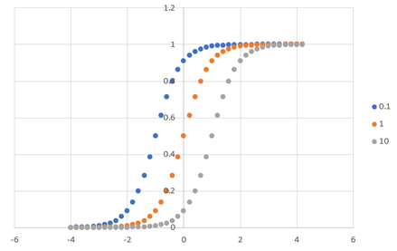

化学平衡論
基質の結合曲線，対数表示-2
\( \Large \displaystyle P_B = \frac{1}{ 1 + e^{ -2.3( [L]_{10} - log \ K)}} \)
ですが，計算を簡単にするために，
\( \Large \displaystyle y= \frac{1}{ 1 + e^{ -a( x - x_0)}} \)
を検討していきます．
一階微分は，
\( \Large \displaystyle \frac{dy}{dx} = \frac{a \cdot e^{ -a( x - x_0)}}{ \left( 1 + e^{ -a( x - x_0)} \right)^2 } \)
二階微分は，
\( \Large \displaystyle \frac{d^2 y}{dx^2} = \frac{2 \left( a \cdot e^{ -a( x - x_0)} \right)^2}{ \left( 1 + e^{ -a( x - x_0)} \right)^3 }
+ \frac{-a^2 \cdot e^{ -a( x - x_0)}}{ \left( 1 + e^{ -a( x - x_0)} \right)^2 }\)
\( \Large \displaystyle= \frac{2 \left( a \cdot e^{ -a( x - x_0)} \right)^2}{ \left( 1 + e^{ -a( x - x_0)} \right)^3 }
+ \frac{\left( -a^2 \cdot e^{ -a( x - x_0)} \right) \left( 1 + e^{ -a( x - x_0)} \right) }{ \left( 1 + e^{ -a( x - x_0)} \right)^3 }\)
\( \Large \displaystyle= \frac{2 \left( a \cdot e^{ -a( x - x_0)} \right)^2}{ \left( 1 + e^{ -a( x - x_0)} \right)^3 }
+ \frac{ -a^2 \cdot e^{ -a( x - x_0)} - a^2 \cdot e^{ -2a( x - x_0)} }{ \left( 1 + e^{ -a( x - x_0)} \right)^3 }\)
\( \Large \displaystyle= \frac{a^2 \cdot e^{ -2a( x - x_0)} - a^2 \cdot e^{ -a( x - x_0)}}{ \left( 1 + e^{ -a( x - x_0)} \right)^3 } \)
\( \Large \displaystyle= \frac{a^2 \cdot e^{ -a( x - x_0)} \left( e^{ -a( x - x_0)} -1 \right) }{ \left( 1 + e^{ -a( x - x_0)} \right)^3 } \)
最大の傾きは，二階微分の値が０となる場所なので，
\( \Large \displaystyle \frac{d^2 y}{dx^2} = \frac{a^2 \cdot e^{ -a( x - x_0)} \left( e^{ -a( x - x_0)} -1 \right) }{ \left( 1 + e^{ -a( x - x_0)} \right)^3 } = 0\)
\( \Large \displaystyle e^{ -a( x - x_0)} = 1\)
\( \Large \displaystyle -a( x - x_0) = 0\)
したがって，
\( \Large \displaystyle x = x_0 \)
の点で最大の傾きとなります．
ここで元の式と比較してみると，
\( \Large \displaystyle P_B = \frac{1}{ 1 + e^{ -2.3( [L]_{10} - log \ K)}} \)
\( \Large \displaystyle a = 2.3 \)
\( \Large \displaystyle x_0 = log \ K \)
なので，
\( \Large \displaystyle [L]_{10} = log [L] = log \ K \)
つまり，
\( \Large \displaystyle [L] = K \)
の点で最大の傾きとなります． その時の値は，
\( \Large \displaystyle P_B = \frac{1}{ 1 + e^{ -2.3(0)}} = \frac{1}{2} \)
となります，その時の傾きは，
\( \Large \displaystyle \left. \frac{d y}{dx} \right|_{x= x_0} = \frac{a \cdot e^{ -a( 0)}}{ \left( 1 + e^{ -a( 0)} \right)^2 } = \frac{a}{4} \)
となるので，
\( \Large \displaystyle \left. \frac{d \ P_B}{dL} \right|_{[L]= K} = \frac{2.3}{4} = \frac{1}{ 4 \ log (e)} = 0.575 \)
とKに依存しないことがわかります．
図示すると，

とKを変えても傾きが同じ（シフトする）ことがわかります．
リニア表示の場合には，最大傾きはKに依存しましたが，対数表示するとKに依存しなくなります．
この問題について，次ページで検討していきます．